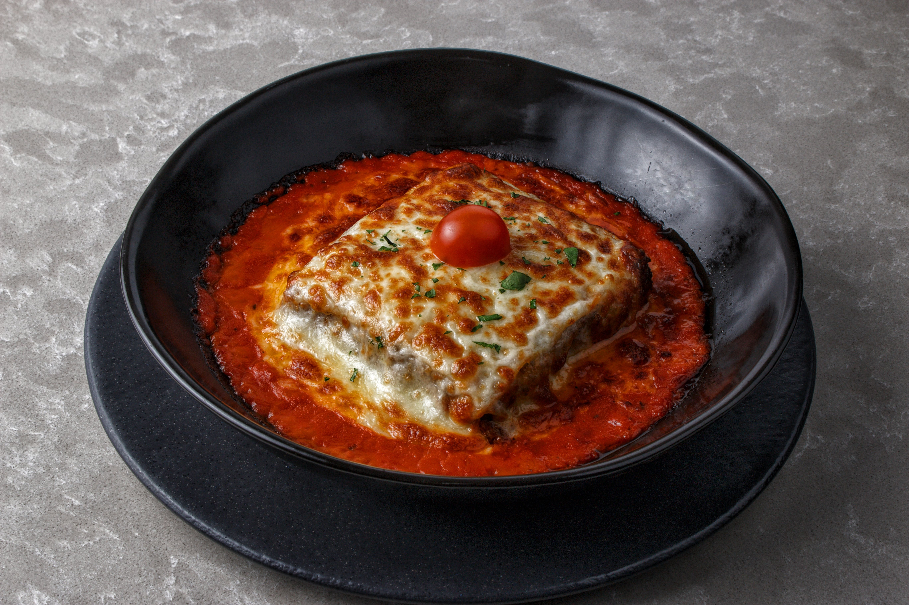

Odin Recipes Lasagna

Description
Lasagna is a classic Italian dish made with layers of pasta, rich tomato sauce,
cheese, and a flavorful meat or vegetable filling. It is baked until the cheese
becomes golden and delicious.
This comforting dish is perfect for family dinners and can be served hot with
garlic bread or a fresh salad.
Ingredients
- Lasagna pasta sheets
- 500 g ground beef
- 2 cups tomato sauce
- 1 small onion, chopped
- 2 cloves garlic, minced
- 1 cup mozzarella cheese
- 1 cup ricotta cheese
- ½ cup Parmesan cheese
- 1 teaspoon oregano
- 1 teaspoon black pepper
- Salt to taste
- 1 tablespoon olive oil
Steps
- Boil the lasagna pasta sheets according to the instructions on the package.
- Heat olive oil in a pan and sauté the chopped onion and garlic.
- Add the ground beef and cook until it is completely browned.
- Add tomato sauce, oregano, black pepper, and salt, then simmer for 10–15 minutes.
- Spread a layer of meat sauce in a baking dish.
- Place a layer of lasagna sheets over the sauce.
- Add ricotta and mozzarella cheese over the pasta.
- Repeat the layers until all the ingredients are used.
- Sprinkle Parmesan and mozzarella cheese on top.
- Bake at 180°C for about 30–40 minutes until the cheese is golden.
- Allow the lasagna to cool for a few minutes before serving.
Home